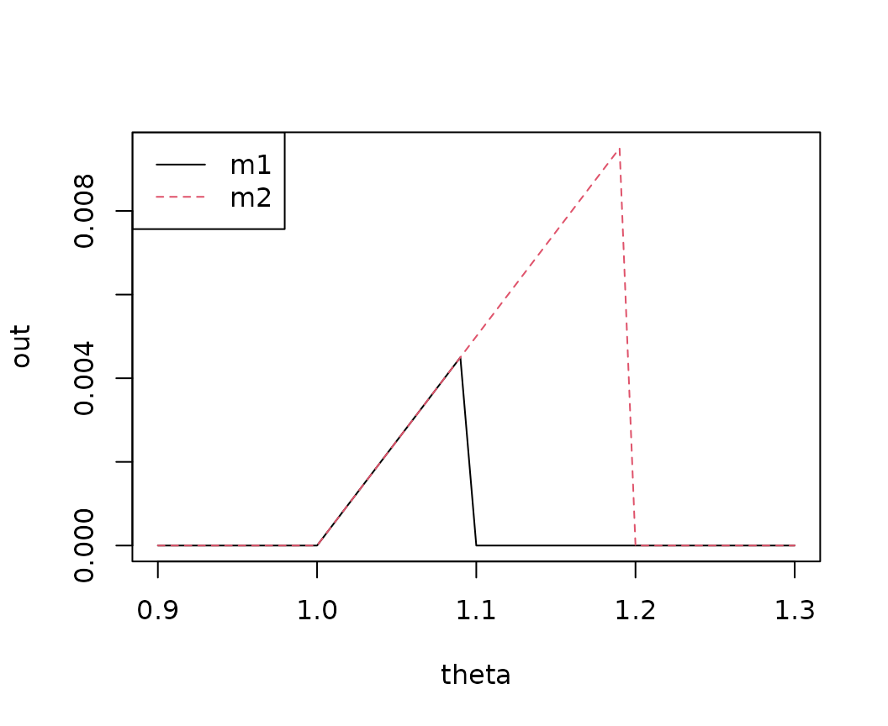

{MetricsWeighted} provides weighted versions of different machine learning metrics and performance measures.
They all take at least four arguments:
actual: Actual observed values.predicted: Predicted values.w: Optional vector with case weights....: Further arguments.
# From CRAN
install.packages("MetricsWeighted")
# Development version
devtools::install_github("mayer79/MetricsWeighted")
library(MetricsWeighted)
# The data
y_num <- iris[["Sepal.Length"]]
fit_num <- lm(Sepal.Length ~ ., data = iris)
pred_num <- fit_num$fitted
weights <- seq_len(nrow(iris))
# Performance metrics
rmse(y_num, pred_num)
#> [1] 0.300627
rmse(y_num, pred_num, w = rep(1, length(y_num))) # same
#> [1] 0.300627
rmse(y_num, pred_num, w = weights) # different
#> [1] 0.3138009
mae(y_num, pred_num)
#> [1] 0.2428628
medae(y_num, pred_num, w = weights)
#> [1] 0.2381186
# MSE = mean normal deviance = mean Tweedie deviance with p = 0
mse(y_num, pred_num)
#> [1] 0.09037657
deviance_normal(y_num, pred_num)
#> [1] 0.09037657
deviance_tweedie(y_num, pred_num, tweedie_p = 0)
#> [1] 0.09037657
# Mean Poisson deviance equals mean Tweedie deviance with parameter 1
deviance_poisson(y_num, pred_num)
#> [1] 0.01531595
deviance_tweedie(y_num, pred_num, tweedie_p = 1)
#> [1] 0.01531595
# Mean Gamma deviance equals mean Tweedie deviance with parameter 2
deviance_gamma(y_num, pred_num)
#> [1] 0.002633186
deviance_tweedie(y_num, pred_num, tweedie_p = 2)
#> [1] 0.002633186
# The data
y_cat <- iris[["Species"]] == "setosa"
fit_cat <- glm(y_cat ~ Sepal.Length, data = iris, family = binomial())
pred_cat <- predict(fit_cat, type = "response")
# Performance metrics
AUC(y_cat, pred_cat) # unweighted
#> [1] 0.9586
AUC(y_cat, pred_cat, w = weights) # weighted
#> [1] 0.9629734
logLoss(y_cat, pred_cat) # Log loss = binary cross-entropy
#> [1] 0.2394547
deviance_bernoulli(y_cat, pred_cat) # Log Loss * 2
#> [1] 0.4789093Furthermore, we provide a generalization of R-squared, defined as the proportion of deviance explained, i.e., one minus the ratio of residual deviance and intercept-only deviance, see (Cohen 2003).
For out-of-sample calculations, the null deviance is ideally
calculated from the average in the training data. This can be controlled
by setting reference_mean to the (possibly weighted)
average in the training data.
In order to facilitate the use of these metrics with the pipe, use
the function performance(): Starting from a data set with
actual and predicted values (and optional case weights), it calculates
one or more metrics. The resulting values are returned as a
data.frame.
library(dplyr)
fit_num <- lm(Sepal.Length ~ ., data = iris)
# Regression with `Sepal.Length` as response
iris %>%
mutate(pred = predict(fit_num, data = .)) %>%
performance("Sepal.Length", "pred")
> metric value
> rmse 0.300627
# Multiple measures
iris %>%
mutate(pred = predict(fit_num, data = .)) %>%
performance(
"Sepal.Length",
"pred",
metrics = list(rmse = rmse, mae = mae, `R-squared` = r_squared)
)
> metric value
> rmse 0.3006270
> mae 0.2428628
> R-squared 0.8673123Some scoring functions depend on a further parameter \(p\):
tweedie_deviance(): depends on
tweedie_p.elementary_score_expectile(),
elementary_score_quantile(): depend on
theta.prop_within(): Depends on tol.It might be of key relevance to evaluate such function for varying
\(p\). That is where the function
multi_metric() shines.
ir <- iris
ir$pred <- predict(fit_num, data = ir)
# Create multiple Tweedie deviance functions
multi_Tweedie <- multi_metric(deviance_tweedie, tweedie_p = c(0, seq(1, 3, by = 0.2)))
perf <- performance(
ir,
actual = "Sepal.Length",
predicted = "pred",
metrics = multi_Tweedie,
key = "Tweedie_p",
value = "deviance"
)
head(perf)
#> Tweedie_p deviance
#> 1 0 0.090376567
#> 2 1 0.015315945
#> 3 1.2 0.010757362
#> 4 1.4 0.007559956
#> 5 1.6 0.005316008
#> 6 1.8 0.003740296
# Deviance against p
plot(deviance ~ as.numeric(as.character(Tweedie_p)), data = perf, type = "s")The same logic as in the last example can be used to create so-called
Murphy diagrams (Ehm et al. 2016). The function
murphy_diagram() wraps above calls and allows to get
elementary scores for one or multiple models across a range of theta
values, see also R package murphydiagram.
y <- 1:10
two_models <- cbind(m1 = 1.1 * y, m2 = 1.2 * y)
murphy_diagram(y, two_models, theta = seq(0.9, 1.3, by = 0.01))